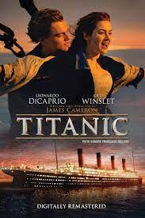

MOVIE GALLERY
Avatar
Jake Sully and Ney'tiri have formed a family and are doing everything to stay together. However, they must
leave their home and explore the regions of Pandora. When an ancient threat resurfaces, Jake must fight a
difficult war against the humans.
Director: James Cameron
Release date: 18 December 2009
TITANIC

Seventeen-year-old Rose hails from an aristocratic family and is set to be married. When she boards the
Titanic, she meets Jack Dawson, an artist, and falls in love with him.
Director: James Cameron
Release date: 19 December 1997
ONE DAY

A woman suffers from a rare form of temporary amnesia, lasting for a day. Her shy colleague, who is secretly
in love with her, tells her that they are a couple in order to experience being with her for just one day.
Director: Banjong Pisanthanakun
Release date: 1 September 2016 (Thailand)
The Kissing Booth
A high school student finds herself face-to-face with her long-term crush when she signs up to run a kissing
booth at the spring carnival.
Director: Vince Marcello
Initial release: 11 May 2018